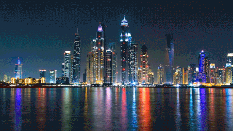

Giza,Egypt


Geographical Location: Africa
Giza is located on the western bank of the Nile River, and it is a historically and culturally significant city in Egypt. It is home to the Great Pyramids and the Sphinx, which are ancient wonders of the world. These monuments also raise many questions about how advanced the ancient Egyptians truly were. Giza has recently become a bustling city full of tourists and adventurers seeking to see the ancient lure of Egypt.
Giza is a city that is very unique for a lot of reasons. One reason why is the ability to be a vibrant city that also is able to blend in its vast historical heritage within its city life . One one side you can see the pyramids , and on the other you can see the bustling night life of Egypt. This city is also very close by to the capital of Egypt , which allows tourists to not only visit Giza , but they also gain the opportunity of going to the nearby capital and getting any work needed done.
Photo Gallery


Yellowstone


Geographical Location: North America
Yellowstone is the first national park in the United States. It covers over 2.2 million acres, and provides an opportunity to see wildlife and explore geothermal areas. In fact, Yellowstone contains about half the world's active geysers.
These unique opportunities also bring out a lot of bad decisions among the tourists. Every year visitors injure themselves or the wildlife by getting close to the animals. You can see examples of people making bad decisions by visiting Yellowstone National Park: Invasion of the Idiots, Tourons of Yellowstone, or Cowboy State Daily.
Photo Gallery


Dubai, United Arab Emirates

Geographical Location: Asia
Dubai is a growing attraction for many travelers. This city is located in the United Arab Emirates on the southeastern coast of the Persian Gulf. Dubai is renowned for its iconic architecture, luxurious lifestyle, and rapid development. Dubai is a global hub for tourism, innovation, and business.
Dubai is a futuristic oasis in the middle of the desert. This city offers a unique blend of tradition and modernity. Towering skyscrapers offer a breathtaking skyline view. Dubai contains iconic buildings, malls, and islands that fuel its tourism.
Photo Gallery


New York City, USA


Geographical Location: North America
New York City, otherwise known as “The Big Apple,” is a bustling city in the United States of America. Home to about 8 million people, New York City houses popular attractions such as the statue of liberty, central park, the empire state building, and many more.
There are 5 boroughs within New York City, including Brooklyn, Manhattan, Staten Island, Queens, Bronx. Each borough is filled with different sights to see. New York City has many opportunities not only for those who live there, but also those visiting. From navigating the subway system to seeing a Broadway show, it is impossible to get bored.
Photo Gallery


Zion National Park


Geographical Location: North America
Found in southwestern Utah, Zion National Park spreads over 229 square miles. The park is known for its sandstone cliffs, deep canyons, and vast mesas, giving it a unique beauty that everyone should try to experience . Along with this Zion offers a wide variety of Flora and Fauna that differs each season making it a hot destination all year round.
Having over 112 trails available to hike, walk, and even camp at, people from all over the world are traveling to Zion to see just how amazing it truly is. With trails that range from riverside walks all the way to hikes that have you scaling long bluffs to reach a peak, Zion has something that every outdoorsman can enjoy. However it is not all sunshines and rainbows, and there are dangers that come with these trails that all hikers should read and learn about before their expedition.
Photo Gallery